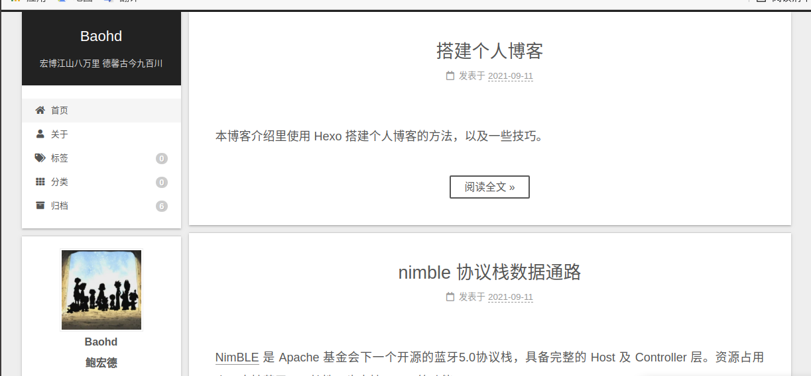
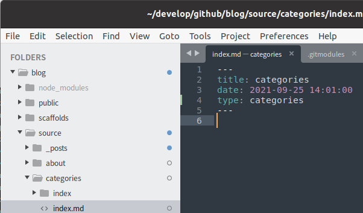
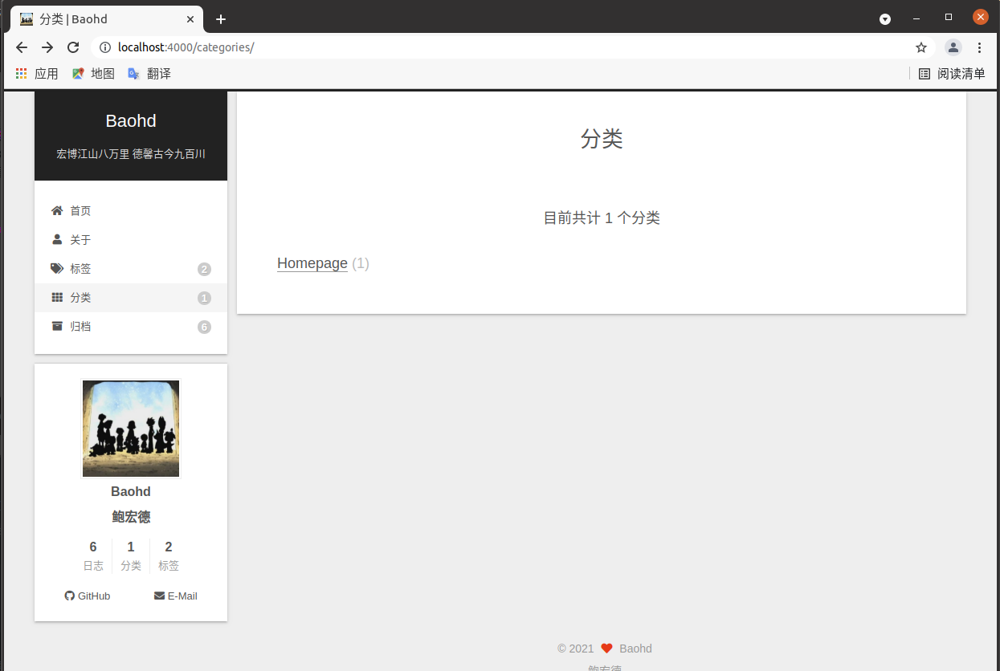
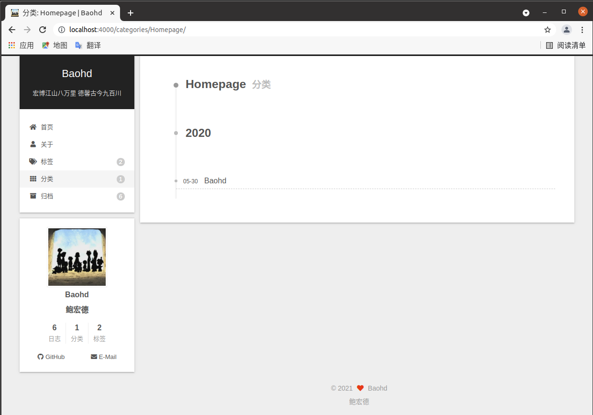
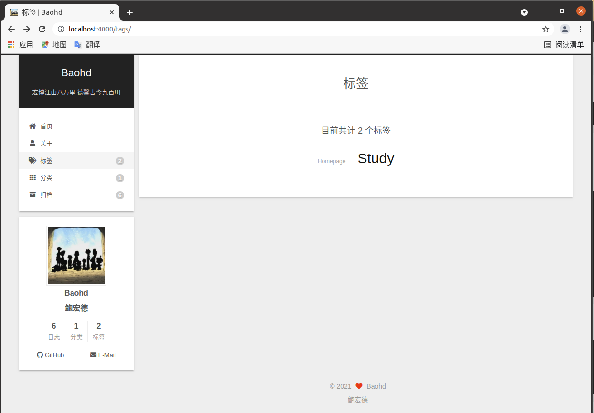
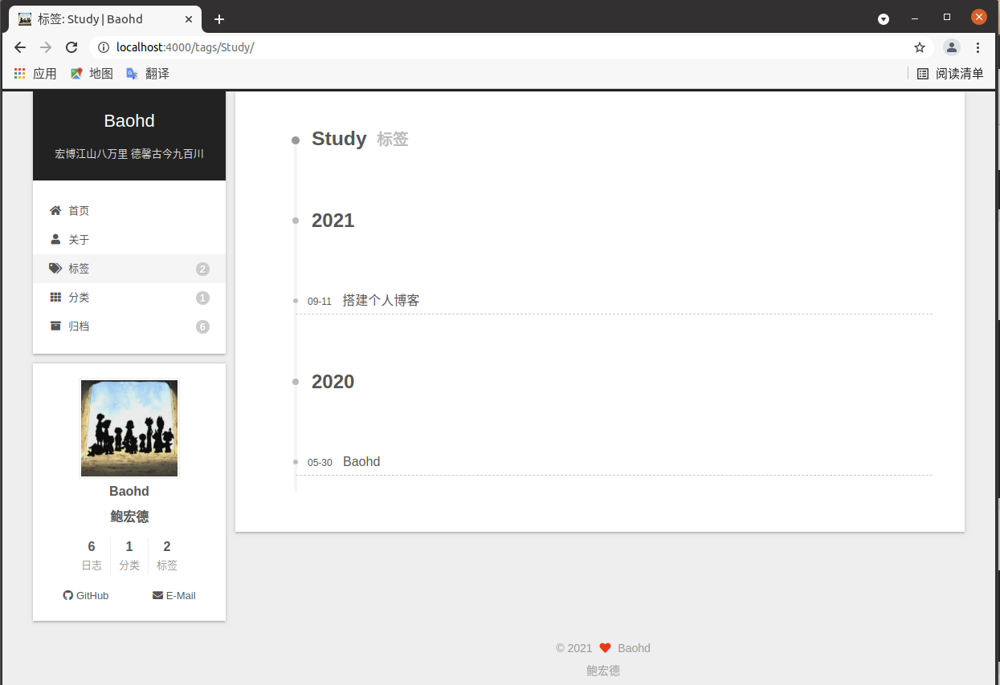

本博客介绍里使用 Hexo 搭建个人博客的方法，以及一些技巧。
环境配置
安装 Node.js
Hexo 框架是基于 Node.js。
Node.js 可以从官网下载，如果网速缓慢，可以使用其他地址，例如：
1 | curl -sL https://deb.nodesource.com/setup_8.x | sudo -E bash - #8版本 |
安装 Hexo
安装 Hexo 使用以下命令
1 | npm install -g hexo |
编写与部署
初始化
选择一个工作目录, 并初始化 Hexo， 此操作会自动下载一些文件到这个目录，包括 node_modules
1 | cd ~/develop/github/blog |
创建新的博客
1 | hexo new "first blog" |
该命令会在 source/_posts 目录下创建新的文件 first-blog.md 和文件夹 first-blog。
然后即可编辑 first-blog.md 编写你的第一封博客。文件夹 first-blog 里可存放一些图片等文件。
注意： 请使用英文名称，防止中文文件名带来的错误。可在文章 title 属性里改成中文名称。
详见：Writing
生成本地文件
1 | hexo g |
该命令编译并生成本地 HTML 文件。
详见：Generating
启动 server
1 | hexo s |
该命令会启动本地服务，打开浏览器访问 http://localhost:4000 即可看到内容。
详见：Server
部署到远端
- 在部署之前先在 github 上建立新的仓库
<username>.github.io - 安装工具 hexo-deployer-git。
- 在 _config.yml 添加如下配置：
1
2
3
4
5deploy:
type: git
repo: https://github.com/<username>/<project>
# example, https://github.com/blueMoods/blueMoods.github.io.git
branch: master - 部署到 github
- 详见：Deployment
1
hexo d
- 详见：Deployment
- 稍等之后即可在 https://<username>.github.io/ 看到博客。
更换主题
默认主题较丑，可以寻找自己喜欢的主题更换，推荐 hexo-theme-next。
编写技巧
主页显示简略信息
博客的内容很多，全部显示在主页上会显得很乱，可加上 <!-- more --> 标签，使主页只显示该标签前的部分。
例如：
1 | --- |

Categories
Categories 可用于博客的分类，读者可以通过分类来快速找到感兴趣的博客。
生成分类目录：
1 | hexo new page categories |
该命令会生成 categories 目录，如下：

然后修改文件 categories/index.md 内容为:
1 | --- |
然后给文章添加上 categories 属性
1 | --- |
最后的效果如下：


Tag
Tag 的功能和创建方法和 categories 类似：
生成标签目录：
1 | hexo new page tags |
该命令会生成 tags 目录。然后修改文件 tags/index.md 内容为:
1 | --- |
然后给文章添加上 tags 属性, 可为文章同时添加多个 tag，例如 tags: [Homepage, Study]。
最后的效果如下：


About
About 页面可以展示一些额外信息。
生成关于目录：
1 | hexo new page about |
该命令会生成 about 目录，然后可修改文件 tags/index.md 内容，增加自己喜欢的内容。